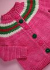

|
||
Premium Patterns Wintry Mix Mitts Love Bytes HawkeyeFree Patterns Kiddie Cadet Summerlin Ruffled Scarf Seamless DS Sock Simply Seamless Pouch Myriads of MushroomsExtras DIY Mitten Blocker Felt Patch Tutorial Yarn Dyeing Tutorial Needle Pouches Knitting Journal |
December 27, 2008 - Posted by Alice SchneblyJojo's Christmas KnitsProject Specs
Pattern: Thorpe by Kirsten Kapur of Through the loops! I hope everyone had a great Christmas! I know we had a blast! I got to see my sister open her Fiddlehead Mittens which she loved, and also gave my niece this cute sweater and hat set. I’ve almost finished all my x-mas knitting, but luckily I still have time to finish up a few more things before we get together with our whole family for a late Christmas celebration in a couple of weeks.  I came up with the plan to knit this sweater and hat set for my niece, Jojo, about a week before Christmas when I realized I’d never get the other gift I had planned done in time. It took some quick knitting but I love how it turned out! The sweater is just about the cutest thing on her and fits her absolutely perfectly! There’s a bit of extra length in the arms and body so it should (hopefully) fit her for awhile longer. I opted to make the cardigan version of this pattern; I thought it would be better that it can be easily taken off especially since Malabrigo isn’t machine washable. I also love that it can be slipped on quickly. Jojo didn’t want to sit still long enough for us to button it up, but I think the cardigan looks just as cute worn open. This is the second time I’ve knit this pattern, and though I have loved the finished product each time, I haven’t overly enjoyed the actual pattern. If you’re looking for a pattern that lays out everything with step by step instructions this might not be the one for you. The color changes in the yoke are more guidelines than anything, so it really helps to use your gauge to figure out how many rows of each color you’ll need and where to place the decreases in advance. When it came time to work the button bands, I was surprised to see there were no instructions on how to knit buttonholes or how many buttons to use. In the end I think if I have to do a lot of figuring anyways, I’ll tackle an Elizabeth Zimmermann pattern next time I want to knit a seamless sweater. After finishing up the sweater I decided to move onto a pattern I really love and have knit three times already —Thorpe. This hat turned out better than I even expected and knit up so quickly. I knit the same size that I had made for Camdyn before. It’s a tad big on Jojo now but she’ll be able to wear it for years to come. Of course I had to add a huge pompom on top—I think it ups the cuteness factor even more. At first when I chose the color combo for the sweater and hat I thought it might be too Christmassy, but I really like how it all came together! My sister is a huge fan of pink, and the Cactus Flower Malabrigo is the perfect bright pink. I absolutely loved knitting with Malabrigo—I probably don’t even have to mention that anymore. I’m totally addicted to this yarn! This gift was a big hit and I’m excited for it to get lots of use. The weather’s been colder than normal here in Las Vegas, and on Christmas night we even had a little snow flurry! |
   Recent ReviewsRecent Posts
 Our Favorites
|
| © 2007 KathrynIvy.com | ||
{kind=link}
{kind=link}
{kind=link}
{kind=link}